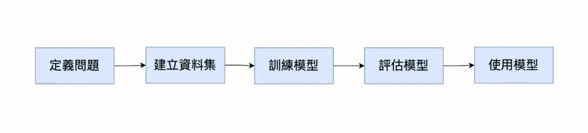
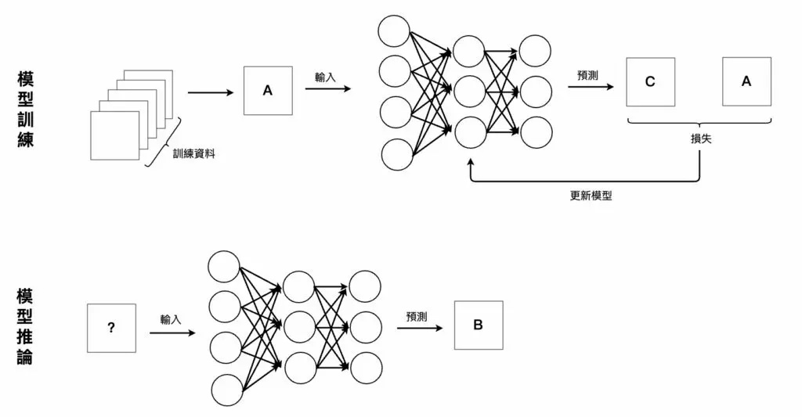
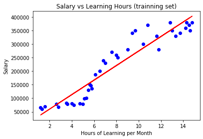
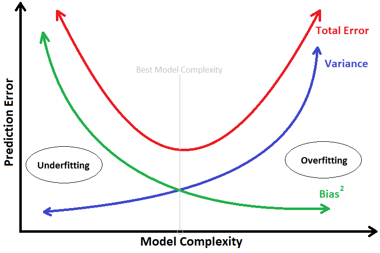
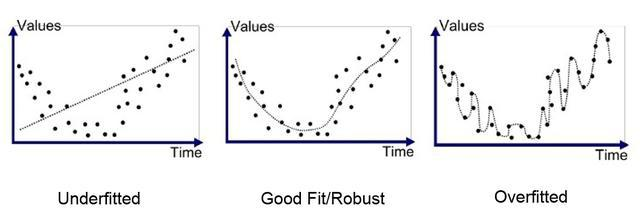

ML Notes 2022 / 09 / 09
歡迎來到 ML 的世界，這裡是我的學習筆記。
介紹
前言
ML 的全名為 Machine Learning 機器學習。ML 為 AI 人工智慧的一個分支，也是實現 AI 的一個途徑。顧名思義，機器學習的目的就是使機器能夠找到資料的規律，並能夠在將來遇到的資料上進行預測。EX. 廣告推薦、搜尋引擎、房價預估、證券市場分析、寶可夢進化後 CP 等等。
機器學習的定位

定義 :
- 機器學習是一門人工智慧的科學，該領域的主要研究物件是人工智慧，特別是如何在經驗學習中改善具體演算法的效能。
- 機器學習是對能通過經驗自動改進的電腦演算法的研究。
- 機器學習是用資料或以往的經驗，以此最佳化電腦程式的效能標準。
分類 :
- 監督學習 ( Supervised Learning ) 從給定的訓練資料集中學習出一個函數，當新的資料到來時，可以根據這個函數預測結果。監督學習的訓練集要求是包括輸入和輸出，也可以說是特徵和目標。訓練集中的目標是由人標註的。常見的監督學習演算法包括迴歸分析和統計分類。
- 無監督學習 ( Unsupervised Learning ) 與監督學習相比，訓練集沒有人為標註的結果。常見的無監督學習演算法有生成對抗網路（GAN）、聚類。
- 半監督學習 ( Semi-supervised Learning ) 半監督學習介於監督學習與無監督學習之間。
- 強化學習 ( Reinforcement Learning ) 增強學習機器為了達成目標，隨著環境的變動，而逐步調整其行為，並評估每一個行動之後所到的回饋是正向的或負向的。
機器學習流程圖


原理
一開始，我們要創造一個函式集合，裡面有成千上萬的函式，在這裡每個函式又稱為模型。接著，我們會用大量的資料去訓練模型，模型也會透過將自己丟到 損失函式 ( Loss function ) 內，來判斷模型的好壞 並 調整自己的參數。隨著訓練次數的增加，模型會漸漸變成我們要的樣子。
訓練過程主要不斷重複以下三點 :
- 輸入訓練資料集到模型中
- 透過損失函數計算目前模型的好壞
- 更新模型中的參數使得損失函數的數值降低 (提升模型的品質)
最後我們會使用機器沒看過的 測試資料 進行模型的評估，來得到最終的模型。
Linear Regression ( 線性迴歸 )
概念
線性迴歸 是一個分析數據資料的方法，應用相當廣泛。迴歸線也可以稱作迴歸模型，屬於監督學習的一種。簡單來說，就是一條靠近資料的線，此條線會隨著函式的樣子改變，所以不一定為直線。在機器學習中，我們則可以透過它來找到資料的規律，來預測未來遇到的資料。

Bias & Variance
前言
訓練完我們的模型後，進入評估模型的階段。評估一樣東西時，一定需要一個標準或準則來判定好壞，這裡我們的準則是模型的 誤差 ( Error )。影響 Error 的兩樣因素則是 偏差 (Bias) & 方差 ( Variance )。俗話說的好，有一好無兩好。降低 Bias 時，Variance 會上升、降低 Variance 時，Bias 會上升。所以模型必須選得剛剛好才行。
Bias
Bias 的定義是 模型的輸出與標籤 ( label ) 的誤差，在這裡的標籤意旨 正確答案。
Bias 越大 模型的輸出與標籤的差距越大、離正確答案越遠，代表模型不瞭解資料背後的規律 稱為 Underfitting。可能因為模型訓練的不夠徹底、模型複雜度太低 等等。解決辦法為 提高複雜度、篩選更好的數據特徵來訓練模型。
Variance
Variance 的定義是 針對不同的輸入資料，模型輸出的變化 (變異性) 分佈。
當我們為了解決 Underfitting 而把複雜度大幅度提高時，往往會造成在訓練時可以得到很好的預測結果，然而一加入沒看過的測試資料時，又會產生大量的 Error。這是因為 模型過度擬合數據，導致模型太過複雜，不能真實反映實際情況。這種模型我們稱為 Overfitting。通過簡化模型，比如減少模型參數 可以降低 Error 的發生。
模型複雜度 & 誤差

訓練資料上的 Bias & Variance
